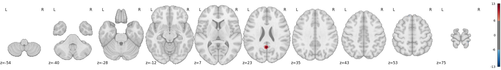
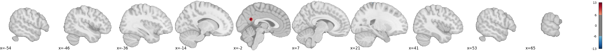
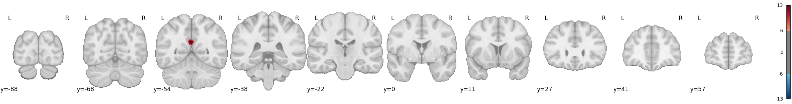
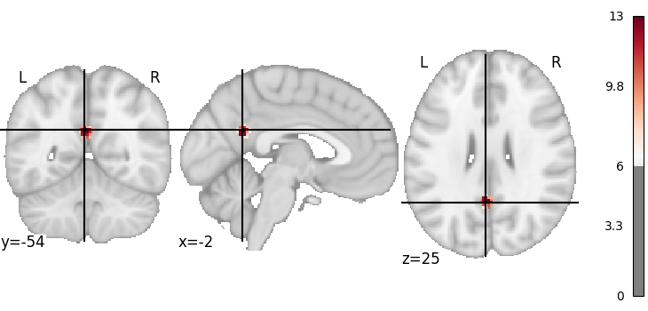
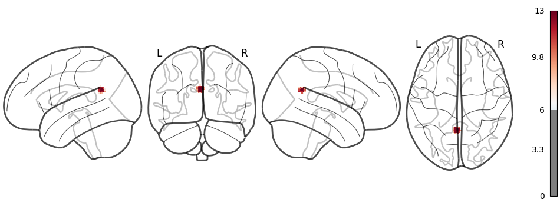

| Data Type | nifti_sample |
| Model Number | Model_01 |
| Model Equation | lmer(Yvar ~ group + age + age2 + sex + (1|site)) |
| Effect of Interest | group |
| Positive Map: | Results/nifti_sample/Mega/TIDY/statistic/group/OUT_Model_01.nii.gz_pTFCE/pTFCE-z-score-map.nii.gz |
| Negative Map: | Results/nifti_sample/Mega/TIDY/statistic/group/OUT_Model_01.nii.gz_pTFCE/pTFCE-z-reversed-score-map.nii.gz |
| Threshold File: | Results/nifti_sample/Mega/TIDY/statistic/group/OUT_Model_01.nii.gz_pTFCE/thres_z_fwer0.05.txt |
| Output Directory: | Reports/nifti_sample/Mega/group/Model_01 |
Statistical analysis was conducted using the IBMMA package for neuroimaging data processing. Statistical inference was enhanced through the implementation of the probabilistic threshold-free cluster enhancement (pTFCE) method, which optimizes the detection of significant signals by combining cluster extent and voxel intensity information. Two-tailed statistical maps were thresholded at ZpTFCE > 6.0 (corresponding to pFWE < 0.05) with a minimum cluster extent threshold of 20 contiguous voxels to control for multiple comparisons. All visualizations presented herein display only voxels that exceeded these statistical thresholds.
Anatomical localization of significant clusters and peaks was performed using the Nilearn and the AtlasReader packages, which provide standardized labeling according to multiple neuroanatomical atlases for comprehensive spatial interpretation of results.
| Variables | Missing | Overall | 0 | 1 | P-Value | Test | |
|---|---|---|---|---|---|---|---|
| n | 24 | 12 | 12 | ||||
| age, mean (SD) | 0.0 | 42.500 (13.835) | 39.076 (13.141) | 45.924 (14.210) | 0.233 | Two Sample T-test | |
| age2, mean (SD) | 0.0 | 1989.674 (1187.769) | 1685.243 (1057.527) | 2294.104 (1276.431) | 0.217 | Two Sample T-test | |
| sex, mean (SD) | 0.0 | 0.500 (0.511) | 0.500 (0.522) | 0.500 (0.522) | 1.0 | Two Sample T-test |
Note: Group comparisons of demographic and clinical variables.
| SITE | n | group, mean (SD) | age, mean (SD) | age2, mean (SD) | sex, mean (SD) |
|---|---|---|---|---|---|
| Missing | 0.0 | 0.0 | 0.0 | 0.0 | |
| Overall | 24 | 0.500 (0.511) | 42.500 (13.835) | 1989.674 (1187.769) | 0.500 (0.511) |
| 1 | 8 | 0.500 (0.535) | 41.277 (11.285) | 1815.235 (899.662) | 0.500 (0.535) |
| 2 | 8 | 0.500 (0.535) | 47.880 (15.074) | 2491.352 (1349.895) | 0.500 (0.535) |
| 3 | 8 | 0.500 (0.535) | 38.342 (14.825) | 1662.435 (1248.628) | 0.500 (0.535) |
Note: Distribution of variables across different sites.



Nevigate the brain maps through left-click.
The images below show the significant clusters identified in the analysis.

The table below shows the significant peaks and their associated clusters identified in the analysis.
| cluster_id | X | Y | Z | Peak_Val | Cluster_Mean | Vol (mm3) | Regions |
|---|---|---|---|---|---|---|---|
| 1 | -2.5 | -54.5 | 25.5 | 13.014 | 9.915 | 768.0 | 53.1% Left_Cingulate_Gyrus_posterior_division; 28.1% Left_Precuneous_Cortex; 12.5% Right_Precuneous_Cortex; 6.2% Right_Cingulate_Gyrus_posterior_division |
Table Footnotes:
